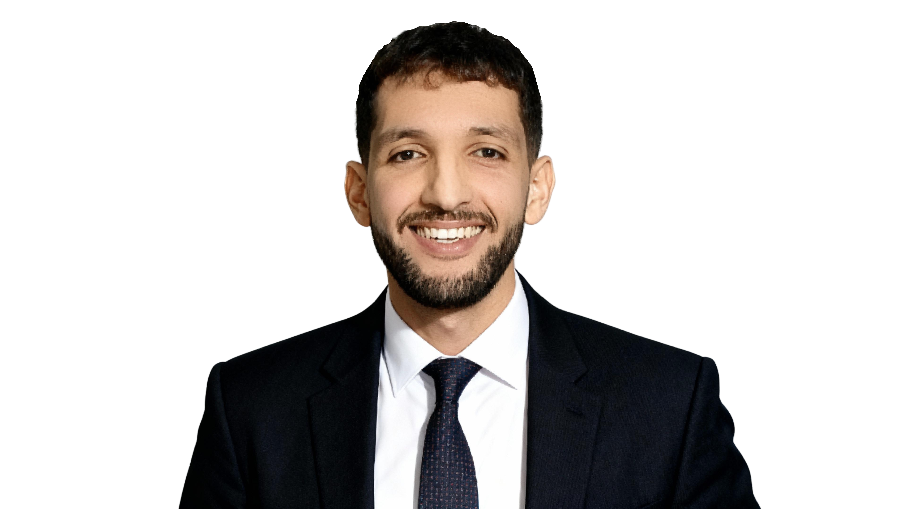
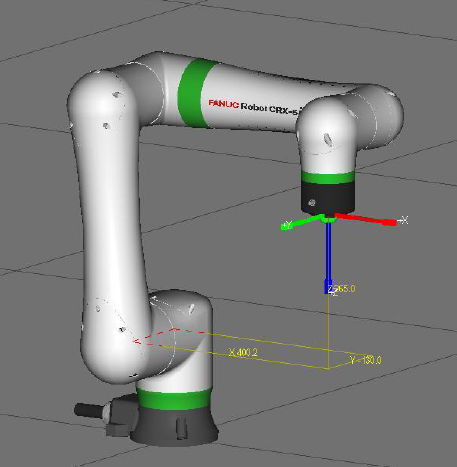
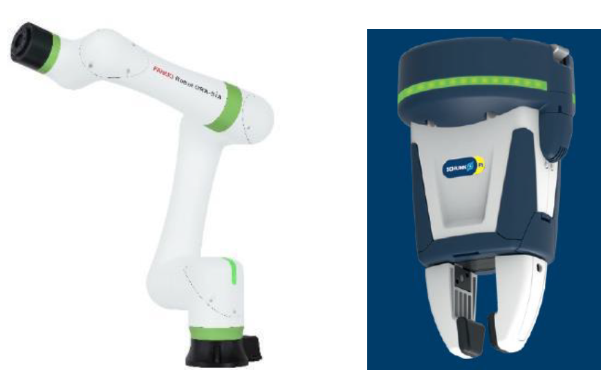
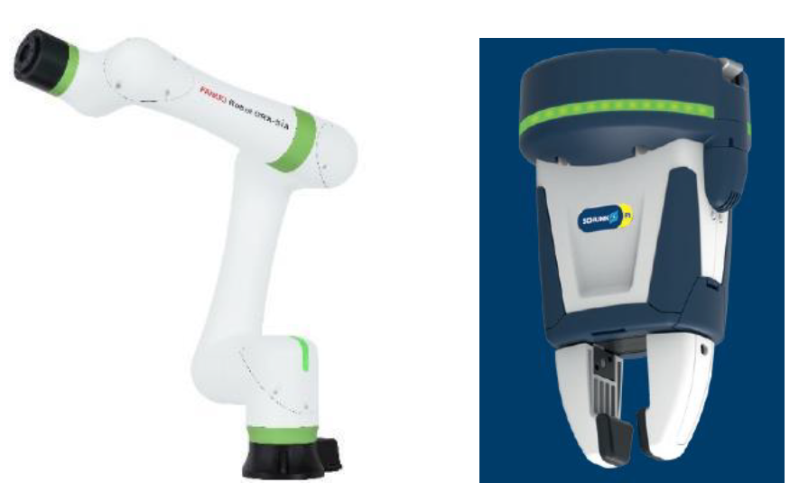
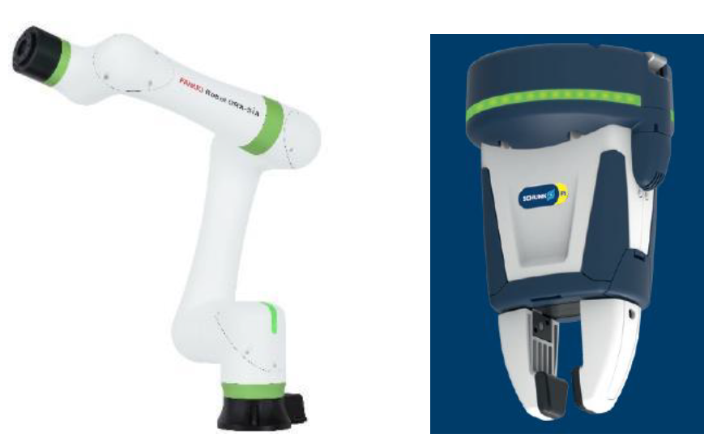
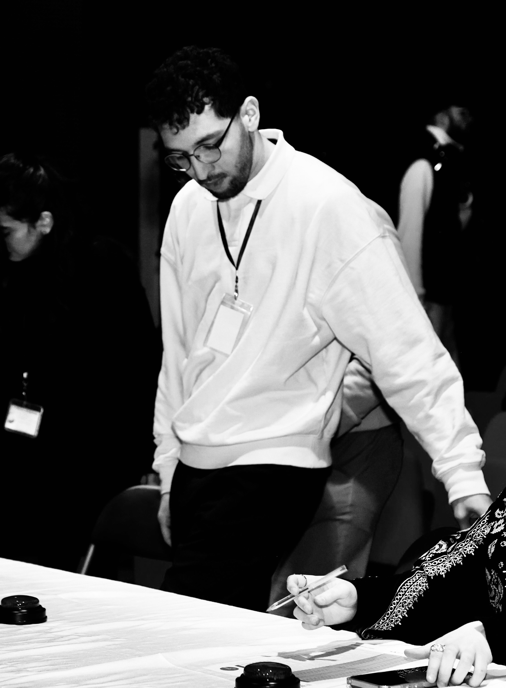
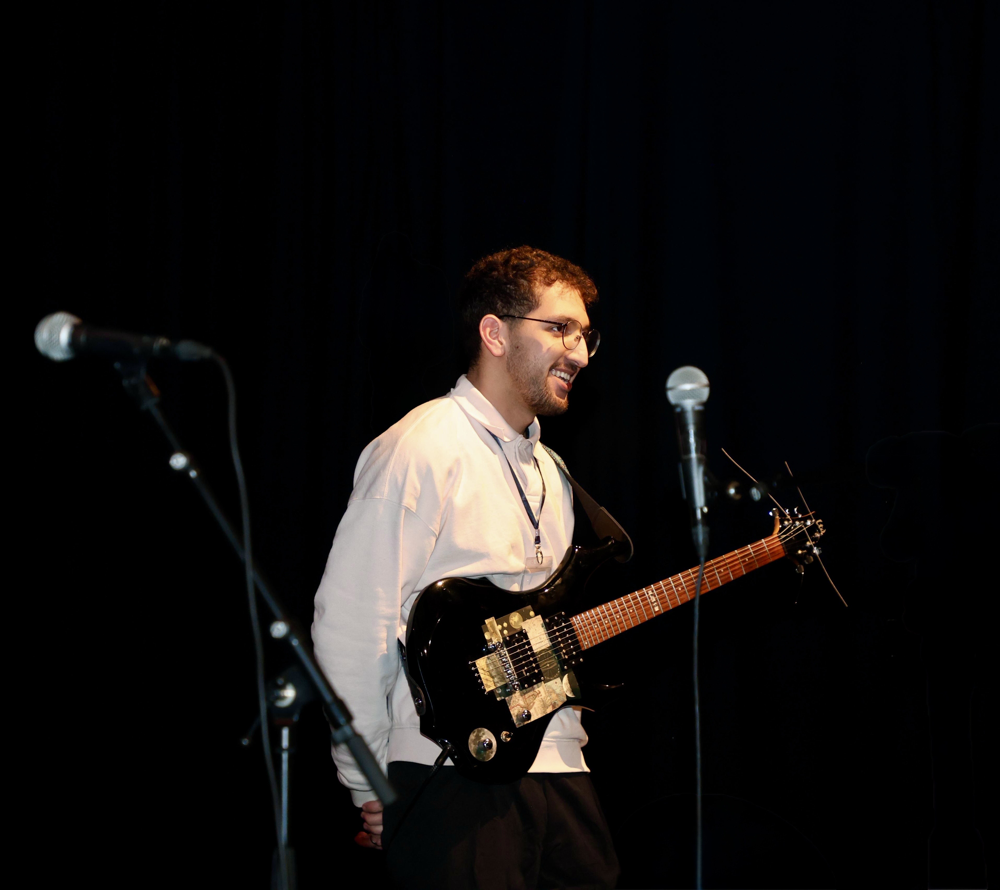
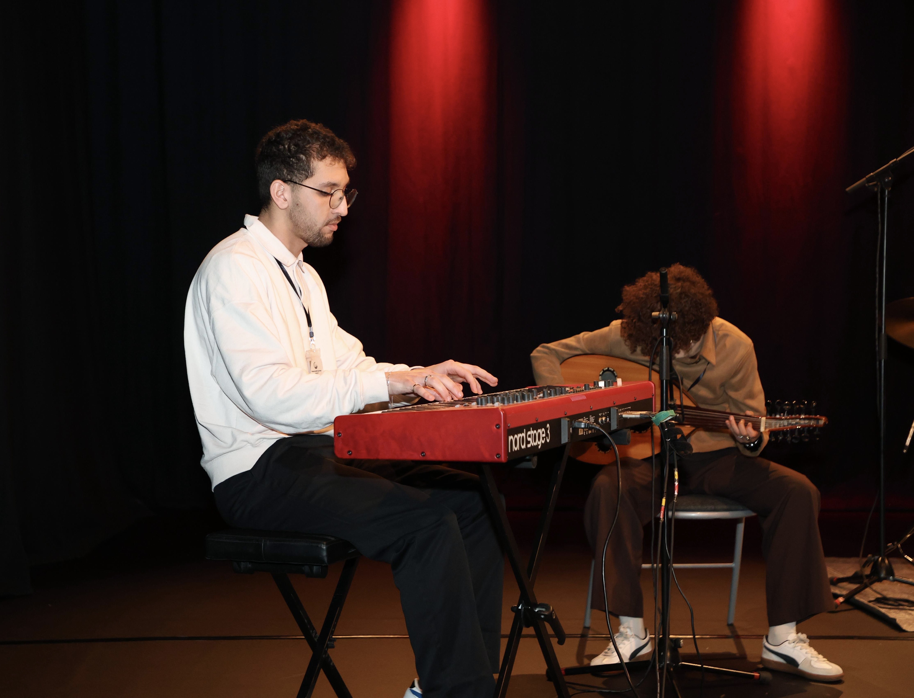
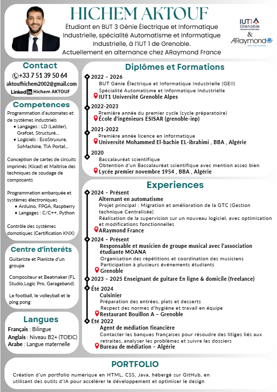

- Conception électronique sur KiCad
- Calculs et dimensionnement : choix des composants
- Fabrication, brasage & tests des cartes
- Assemblage des cartes, moteurs, capteurs
- Programmation en C++ sur microcontrôleur
- Validation & optimisation : tests sur parcours, réglages PID éventuels
Hichem Aktouf

Étudiant — GENIE ÉLECTRIQUE & INFORMATIQUE INDUSTRIELLE • Alternant ARaymond
Bienvenue — Mon portfolio mobile
Présentation
Passionné par les technologies concrètes, je conçois des solutions à l’intersection de l’électronique, de l’informatique industrielle et de l’automatisation ; créatif et curieux, j’allie la rigueur d’ingénieur à un sens aigu du détail visuel et sonore.
Compétences
Programmation d’automates
Maîtrise des langages LD, Grafcet, ST. Logiciels : EcoStruxure, SoMachine, TIA Portal.
Électronique & Conception
Conception et routage PCB sous KiCad. Soudage CMS et traversant.
Programmation embarquée
Arduino, FPGA, Raspberry Pi. Langages : C / C++, Python.
Domotique & Énergie
Contrôle de systèmes domotiques — Certifié KNX. Habilitation électrique B2V.
Robotique industrielle
Programmation et manipulation : Stäubli, Fanuc (formation Stäubli).
Développement & IHM
HTML/CSS et création d’IHM sous TwinCAT HMI; configuration et supervision.
Parcours BUT GEII
BUT 1 – Première année
Une année tronc-commun qui permet de découvrir les bases des grands domaines du génie électrique et informatique industriel.
Projet : Robot suiveur de ligne
Objectif : Concevoir et réaliser un robot autonome capable de suivre une ligne au sol.
Projet 2 : SAÉ Armoire Électrique Industrielle
Objectif : Câbler et mettre en service une armoire électrique industrielle complète à partir d'un schéma réalisé en théorie.
- Conception du schéma électrique
- Choix du matériel et implantation des composants
- Câblage de l'armoire
- Habilitation électrique
- Dépannage, tests, mesures et vérifications
BUT 2 – Deuxième année
Approfondissement des connaissances avec des spécialisations progressives (Automatisme et informatique industrielle).
Projet 1 : Programmation de différentes maquettes
Objectif : Programmer et gérer différentes maquettes contenant différents automates avec différents protocoles de communications.
- Étude des différents automates et leurs architectures
- Apprentissage des protocoles de communication (Modbus, CAN, Profibus)
- Programmation en langage ladder et structuré
- Configuration des maquettes et connexions réseau
- Tests de communication inter-automates
- Optimisation et documentation des solutions
Projet 2 : IHM et Supervision
Objectif : Concevoir et développer une interface homme-machine et un système de supervision pour monitorer et contrôler les processus industriels.
- Configuration de Kepware pour créer un serveur OPC et récupérer les variables de l'automate
- Création d'une supervision Panorama connectée au serveur OPC
- Réalisation d'une IHM avec Vijeo Designer
- Liaison des écrans et de la supervision aux variables automates
- Découverte pratique de la communication industrielle et des interfaces
BUT 3 – Troisième année
Spécialisation en automatisme et informatique industrielle.
Projet : Système Cobotique & Vision Industrielle : Réaliser une analyse fonctionnelle d'un système cobotique et mettre en œuvre des automates S7-1200 / S7-1500 pour coordonner le process.
- Mettre en œuvre des automates S7-1200 / S7-1500 pour coordonner le process
- Piloter un variateur pour contrôler la bande transporteuse
- Exploiter des capteurs IO-Link et superviser les données via Moneo
- Lire / écrire des informations sur tags RFID
- Configurer une communication PROFINET multi-équipements

 


Alternance — ARaymond
ARaymond France
spécialisée dans les solutions d’assemblage et de fixation pour l’automobile, l’industrie et l’énergie. Elle fait partie du groupe ARaymond, qui compte plus de 8 500 collaborateurs dans 25 pays et mise sur l’innovation pour accompagner la transition vers la mobilité électrique.

Projet 1 — Septembre à Octobre 2024 : Programmation et supervision d’une maquette formeuse de boîtes (projet test)
- Analyser et concevoir le cycle de la machine
- Programmer 2 automates (principal et setup) qui communiquent via Modbus RTU
- Développer une IHM avec Vijeo Designer et établir la communication avec l’automate
- Exploiter les documentations techniques et prendre en compte les aspects de sécurité
Projet 2 — Novembre 2024 à Août 2026 : Migration et optimisation de la supervision (sites de Grenoble)
- Analyser la GTC existante et identifier ses limites
- Choisir un nouveau logiciel adapté aux besoins de l’entreprise
- Migrer la GTC vers ce nouveau logiciel en assurant la continuité des services
- Apporter des améliorations pour optimiser la gestion des systèmes techniques
Centres d'intérêts
Musique
En tant que responsable, j'assure l'organisation des répétitions, la coordination des musiciens, la préparation des sets et la gestion des prestations. Notre groupe se produit lors de divers événements — soirées, concerts, événements culturels et privés — avec une approche carrée, fiable et professionnelle, même dans une ambiance détendue. Entre créativité et gestion d'équipe, cette aventure renforce mon leadership, mon sens de l'organisation et ma capacité à faire avancer un collectif vers un objectif commun.



Photographie de la nature et rando
CV & Contact

Téléphone: +33 7 51 39 50 64 — LinkedIn